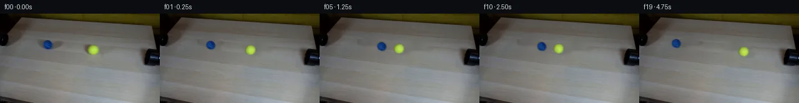

![首帧]()

Round 00
2026-11-04T21:39:42.211181+00:00像素候选变化代码 +190/−0inspection 更新
pixels 322ca2747ea07f6b · code def815659840867e
查看本轮 generate.py 真实 diff
--- previous/generate.py +++ current/generate.py @@ -0,0 +1,190 @@ +from pathlib import Path + +import cv2 +import numpy as np +from PIL import Image, ImageDraw + +from artifact_io import save + + +ROOT = Path(__file__).resolve().parent +W, H = 256, 144 + + +def feathered_disc(h, w, cx, cy, inner, outer): + yy, xx = np.mgrid[:h, :w] + rr = np.hypot(xx - cx, yy - cy) + return np.clip((outer - rr) / (outer - inner), 0.0, 1.0) + + +def extract_sprite(source, center, half, kind): + """Extract only the colored ball; its source cast shadow is rebuilt separately.""" + cx, cy = center + x0, y0 = int(cx - half), int(cy - half) + rgb = source[y0 : y0 + 2 * half + 1, x0 : x0 + 2 * half + 1].astype(np.float32) + r, g, b = rgb[..., 0], rgb[..., 1], rgb[..., 2] + if kind == "blue": + chroma = b - np.maximum(r, g) + alpha = np.clip((chroma - 5.0) / 28.0, 0.0, 1.0) + radius = 8.6 + else: + # The tabletop is only mildly warm; the ball has a very large green-blue split. + chroma = g - b + alpha = np.clip((chroma - 27.0) / 55.0, 0.0, 1.0) + radius = 9.2 + alpha *= feathered_disc(rgb.shape[0], rgb.shape[1], half, half, radius - 1.8, radius + 1.4) + alpha = cv2.GaussianBlur(alpha.astype(np.float32), (3, 3), 0.45) + return rgb, np.clip(alpha, 0, 1), (x0, y0) + + +def clean_plate(source): + """Remove the two balls/shadows while retaining the fixed pipes and wood.""" + mask = np.zeros((H, W), np.uint8) + # The asymmetric extensions include each soft shadow, not either pipe. + cv2.ellipse(mask, (80, 52), (17, 14), 0, 0, 360, 255, -1) + cv2.ellipse(mask, (152, 60), (20, 15), 0, 0, 360, 255, -1) + mask = cv2.GaussianBlur(mask, (5, 5), 0.7) + plate = cv2.inpaint(source, mask, 4.0, cv2.INPAINT_TELEA) + # Re-introduce very subtle horizontal grain through the filled zones by using + # the median residual from neighboring table pixels on each scanline. + for y, xa, xb in [(y, 63, 98) for y in range(36, 69)] + [(y, 131, 175) for y in range(42, 78)]: + left = source[y, max(25, xa - 12) : xa - 3].astype(np.float32) + right = source[y, xb + 3 : min(231, xb + 12)].astype(np.float32) + if len(left) and len(right): + target = np.median(np.vstack((left, right)), axis=0) + plate[y, xa:xb] = np.clip(0.90 * plate[y, xa:xb] + 0.10 * target, 0, 255) + return plate.astype(np.uint8) + + +def add_shadow(frame, pos, kind, squash=0.0): + layer = np.zeros((H, W), np.float32) + cx, cy = pos + if kind == "blue": + center, axes, opacity = (cx + 5.5, cy + 3.8), (11.0, 4.4), 0.135 + else: + center, axes, opacity = (cx + 6.5, cy + 4.2), (12.5, 4.8), 0.145 + cv2.ellipse( + layer, + (int(round(center[0])), int(round(center[1]))), + (int(round(axes[0] * (1 + squash * 0.3))), int(round(axes[1]))), + 7, + 0, + 360, + float(opacity), + -1, + ) + layer = cv2.GaussianBlur(layer, (11, 7), 2.6) + # Neutral/mildly cool contact shadow consistent with the source. + shadow_color = np.array([38.0, 42.0, 42.0], np.float32) + a = layer[..., None] + frame[:] = np.clip(frame * (1 - a) + shadow_color * a, 0, 255) + + +def composite_ball(frame, sprite, alpha, pos, phase, kind, squash=0.0): + sh, sw = alpha.shape + # A subtle moving curved filament makes rotation legible without rotating the + # source lighting. It is deliberately weaker than the photographic blur. + yy, xx = np.mgrid[:sh, :sw] … diff truncated; 103 more lines …